페르시아 미술은 페르시아가 가진
거대한 문화적 영향력에 비례해
오랜 세월 동안 중근동 미술의 중심에 자리해 왔음.
특히 이슬람화 이후에는 섬세한 페르시아 세밀화와
나스탈리크 서예, 도자기 예술로 유명했음.
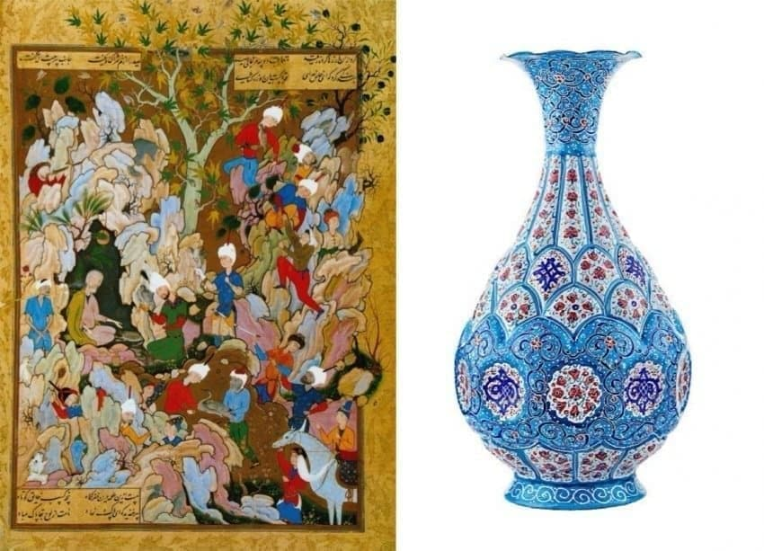
이 가운데 19세기 카자르 왕조 시대는
내정은 흔들리고, 영국,러시아한테 계속 털리던
정치적으로는 암울한 쇠퇴기였지만
문화적으로는 오히려 페르시아 미술의 황금기였음.
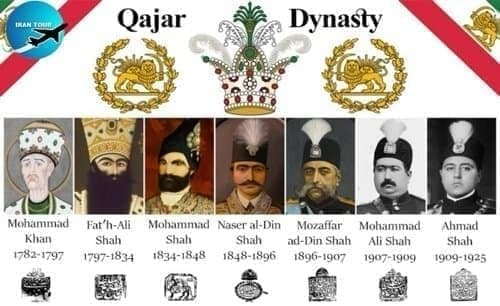
카자르 시대는 유럽과 문화 교류가 활발했던 시절이라,
그 영향을 받아서 유럽의 유화 기술, 명암 표현,
사실주의 묘사 등을 다 흡수해서
전통 페르시아 화법이랑 유럽 회화 기술을 믹스했음
특히 유럽 회화의 레전드인
루벤스, 렘브란트 스타일 영향을 크게 받았음.
덕분에 짙은 색감, 두껍게 칠한 물감, 강렬한 명암이 특징.
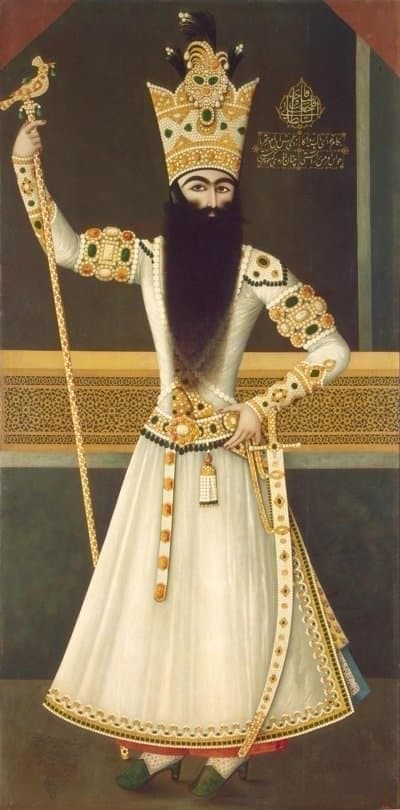
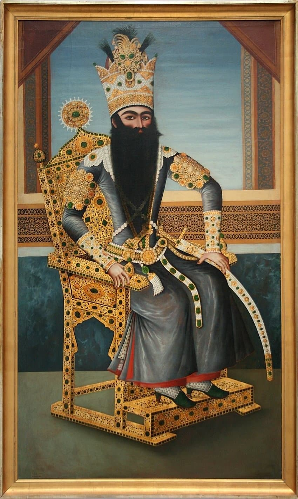
카자르 미술이 진짜 부흥한 건
2대 샤인 파트 알리 샤가 왕위에 오르면서부터임.
이 양반이 예술을 거의 국가 프로젝트 수준으로 밀어줬음.
자기 초상화도 수십 장 그리게 하고,
왕실 화가들을 체계적으로 양성해서
카자르 왕조 미술의 독자적인 양식이
이 시기에 확립되고 전성기로 접어들었음.
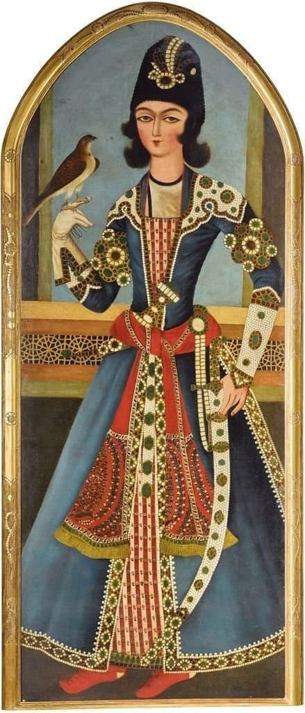
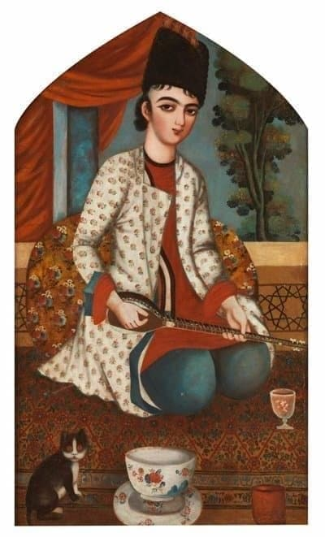
카자르 미술의 흥미로운 특징 중 하나는
남녀 성별 경계가 모호하다는 것임.
당시의 그림을 보면,
남자든 여자든 얼굴, 몸매,
피부 전부 이상적으로 그려졌음.
그 중에서도 특히 중요한 건 미소년 묘사였는데
화장한 듯한 눈매, 작고 갸름한 턱선,
날씬한 몸 등 전형적인 욕망의 대상이었고
실제로 페르시아 시에서는 이 미소년 이미지가
시적 모티프로 자주 등장했음.
특히 어린 남자 무용수, 악사, 시종 같은 모습으로 묘사되며
보는 사람이 누구든 그 아름다움에 취하도록 그려졌다고 함.
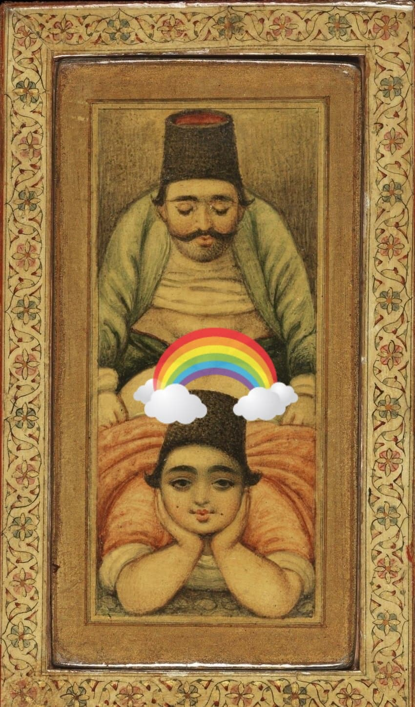
카자르 시기에 제작된 필통
더 나아가서 이 시대엔 아예 사회적으로 용인된
동성애(소년애) 문화도 존재했음.
고대 그리스처럼,
나이 많은 남성(보통은 "카트"라고 불림)과
수염 나기 전의 소년("암라드") 사이에
정서적 혹은 성적인 관계가 맺어지는 일이 흔했음
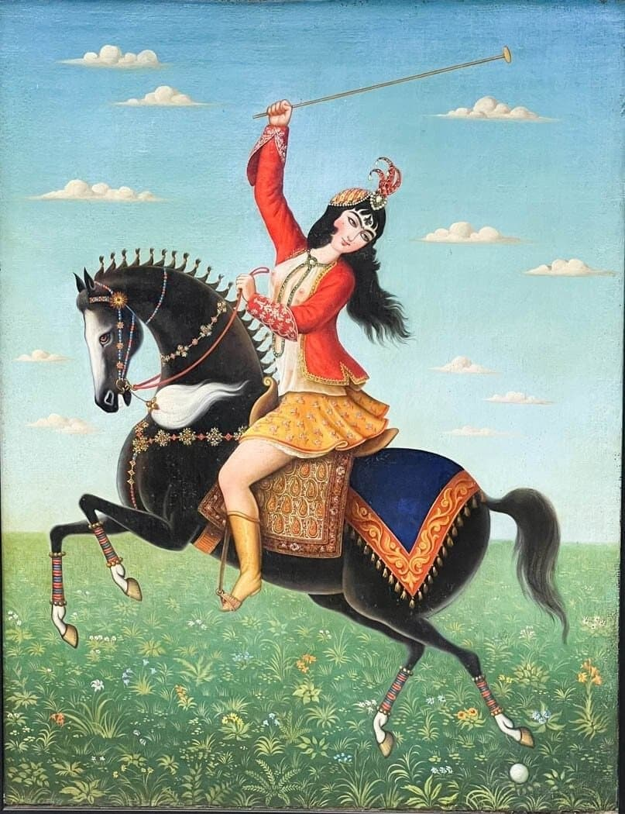
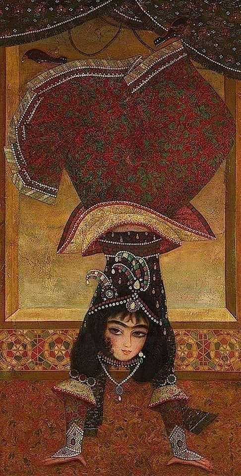
근데 19세기 후반 넘어가면서,
유럽과의 접촉이 심화되고
이란 사회는 서구적 ‘성 도덕’의 시선을 의식하게 되었고
그 결과 이런 미소년 묘사나
동성애적 이미지는 사라지고
점차 그 자리를 이성애 기반의
여성 이미지가 차지하게 됨.
특히 여성 이미지가 좀 더 개성 있게 분리되고,
이런 노출 있는 여성 그림이 예술 주제의 주류로 떠오름.
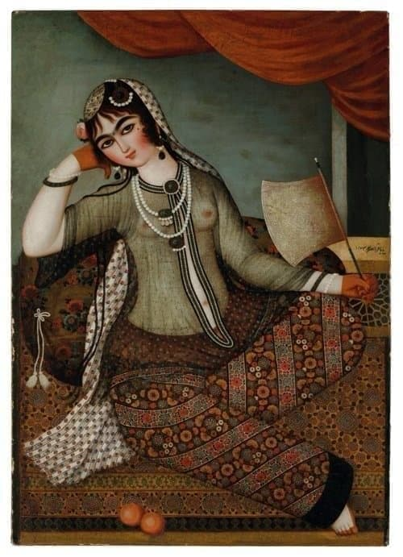
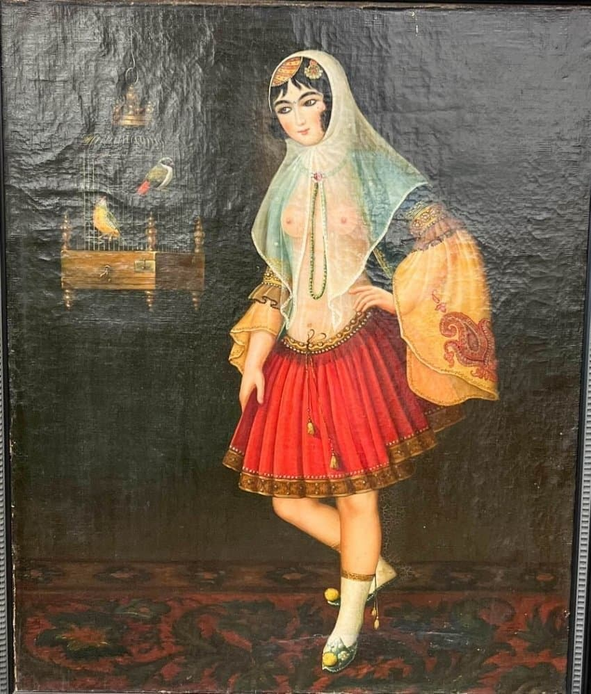
특히 19세기엔 여성이 가슴을 드러낸 그림이 유행했는데
육체의 아름다움을 통해 여성성을 강조하려는 의도였음.
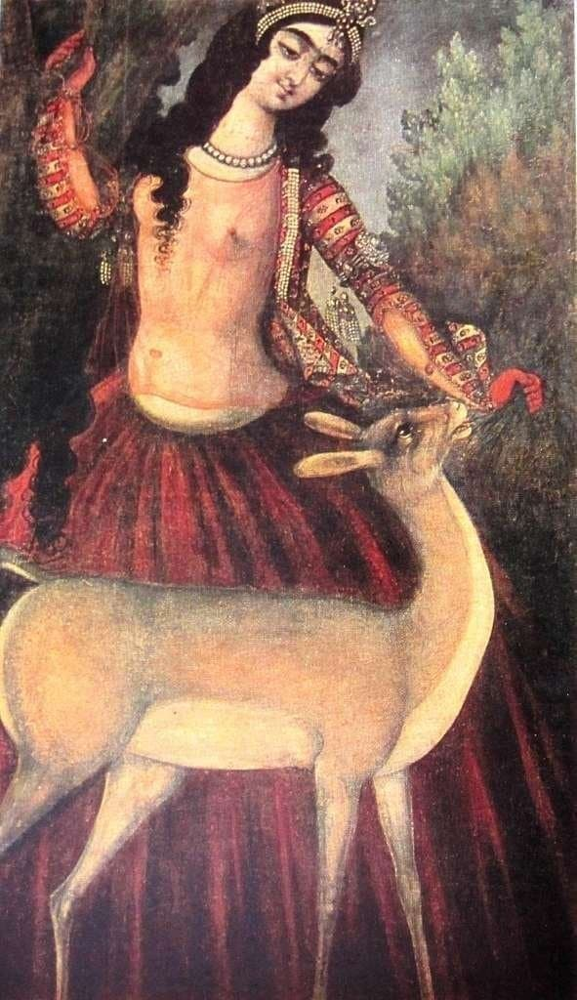
그 당시엔 동그랗고 통통한 얼굴, 진하고 붙은 눈썹,
작은데 오동통한 입술을 가진 사람이 예쁘다고 여겨졌음
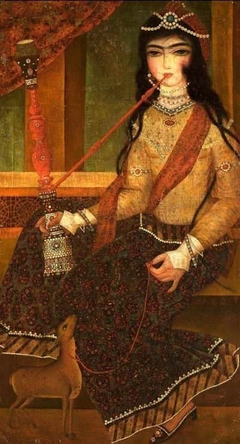
또한 재밌다고 생각하는건
초상화 속 고양이들이 다 못생긴 롱노즈처럼 생김.
품종묘의 대표격인 페르시안 고양이의 나라인데
고양이를 싫어하던 것도 아니면서
왜 이렇게 그렸는지 개인적으로 궁금함
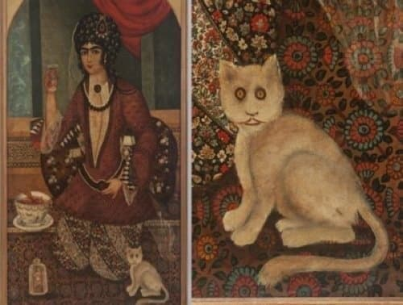
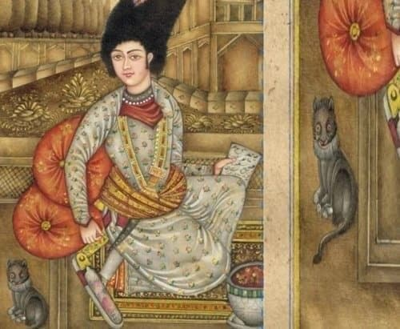
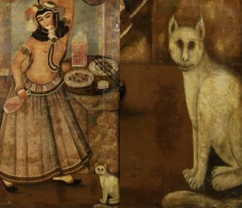
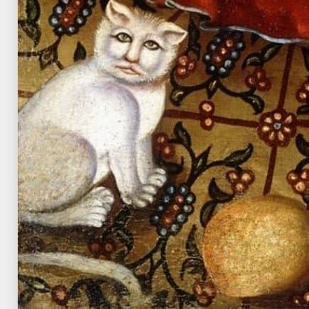
댓글
수집 당시 댓글 82개
남극곰 · 11.06 21:57:44
ㅇㅇ · 11.06 21:58:43
ㅇㅇ · 11.06 21:59:35
햄부기좋아 · 11.06 22:04:57
ㅇㅇ · 11.06 22:08:32
· ㅇㅇ · 11.06 22:14:43
· 시립 · 11.07 03:24:49
· ㅇㅇ · 11.07 03:36:13
ㅇㅇ · 11.06 22:15:23
ㅇㅇ · 11.06 22:19:42
전라도민 · 11.06 22:22:26
· ㅇㅇ · 11.07 03:39:04
· ㅇㅇ · 11.07 21:06:17
· ㅇㅇ · 11.07 21:10:10
· ㅇㅇ · 11.07 21:13:04
· ㅇㅇ · 11.07 21:16:24
· ㅇㅇ · 11.07 21:23:24
· ㅇㅇ · 11.07 21:26:45
쫍쫍이 · 11.06 22:23:59
ㅇㅇ · 11.06 22:27:28
고도리치 · 11.06 22:30:22
· ㅇㅇ · 11.06 22:36:45
· ㅇㅇ · 11.07 22:48:10
캘리포니아호두가싼이유 · 11.06 22:35:06
온풍기 · 11.07 00:57:53
ㅇㅇ · 11.07 01:09:20
ㅇㅇ · 11.07 07:12:39
· ㅇㅇ · 11.07 08:36:30
ㅇㅇ · 11.07 12:04:18
· ㅇㅇ · 11.08 00:54:01
땨뗘(봇) · 11.07 21:05:08
호시노히나타 · 11.07 21:06:15
· ㅇㅇ · 11.07 22:15:05
ㅋㅋ · 11.07 21:07:17
· ㅋㅋ · 11.07 21:09:24
· ㅇㅇ · 11.07 22:14:53
· ㅇㅇ · 11.07 22:16:46
메윈터 · 11.07 21:09:01
ㅇㅇ · 11.07 21:09:08
ㅇㅇ · 11.07 21:12:05
· ㅋㅋ · 11.07 21:13:12
· ㅇㅇ · 11.07 22:16:39
ㅇㅇ · 11.07 21:12:22
ㅇㅇ · 11.07 21:15:14
ㄴㅇㄹ · 11.07 21:16:17
· ㅇㅇ · 11.07 21:22:31
ㅇㅇ · 11.07 21:16:19
ㅇㅇ · 11.07 21:21:49
ㅇㅇ · 11.07 21:22:05
orthodox · 11.07 21:23:49
· ㅇㅇ · 11.07 21:32:44
그거빼면
볼게없는데
ㅇㅇ · 11.07 21:26:50
ㅇㅇ · 11.07 21:29:21
· 해갤러 · 11.07 21:55:59
· ㅇㅇ · 11.07 22:49:41
ㅇㅇ · 11.07 21:29:29
· ㅇㅇ · 11.07 22:50:23
ㅇㅇ · 11.07 21:44:20
ㄱㄷㅂㅅㄱㄷ · 11.07 21:47:14
· 개독 · 11.07 22:41:59
ㅇㅇ · 11.07 22:02:55
ㅇㅇ · 11.07 22:05:30
· ㅇㅇ · 11.07 22:51:10
ㅇㅇ · 11.07 22:16:29
· ㅋㅋ · 11.07 22:19:31
ㅇㅇ · 11.07 22:37:26
ㅇㅇ · 11.07 22:58:21
ㅇㅇ · 11.07 23:13:51
ㅇㅇ · 11.07 23:26:17
환란 전 교회 휴거 · 11.08 00:13:32
더블알발음은아르르 · 11.08 00:14:33
주소킹 · 11.08 01:58:26
ㅇㅇ · 11.08 02:39:37
ㅇㅇ · 11.08 04:18:25
ㅇㅇ · 11.08 05:07:55
ㅇㅇ · 11.08 05:07:59
ㅇㅇ · 11.08 07:27:56
ㅇ.....ㅇ · 11.08 09:18:59
ㅇㅇ · 11.08 13:50:31
JungNu · 11.08 14:01:56
ㅇㅇ · 11.08 16:26:31
ㅇㅇ · 11.08 18:23:00